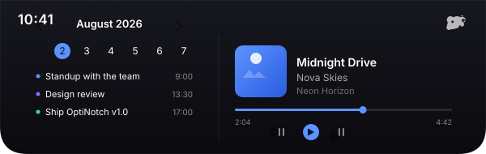

A Dynamic Island
for Windows
A minimal, always-on-top glass bar at the top of your screen that shows the time — and expands on hover into your calendar and the music you're playing. A little bit of iPhone, right on Windows.

Everything, without getting in the way
Gone when you don't need it, informative when you do.
Live clock bar
A compact glass island pinned to the top-center of your monitor that always shows the time.
Hover to expand
Move your mouse over the notch and it grows symmetrically into a full overlay — then shrinks back when you leave.
Google Calendar
Sign in with your own Google account to see the current month, today highlighted, and your next events with times.
Now playing
Uses Windows Media (SMTC) to show album art, title, and artist for whatever is playing system-wide — with playback controls.
In-notch settings
Monitor selection, position, accent color, opacity, hide hotkey, and more — right from the gear in the expanded island.
Out of your way
Win+Alt slides it away, Ctrl+Alt+Q quits from anywhere, and a system tray menu gives you full control.
Scales with your screen
The notch sizes itself as a fraction of your monitor's width, so it stays proportionally correct whether you're on a 1366 px laptop screen or a 4K ultrawide — and it tracks whichever monitor you choose.
One self-contained .exe, fonts embedded, nothing else to
install. It sits in the tray and starts with Windows if you want it to.